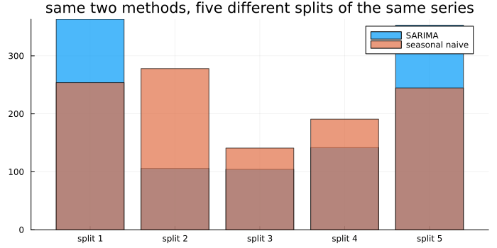
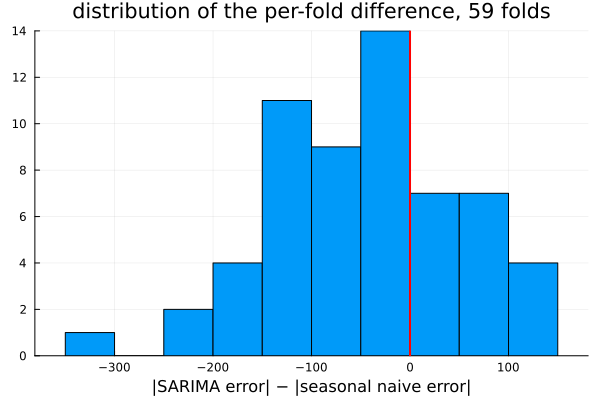
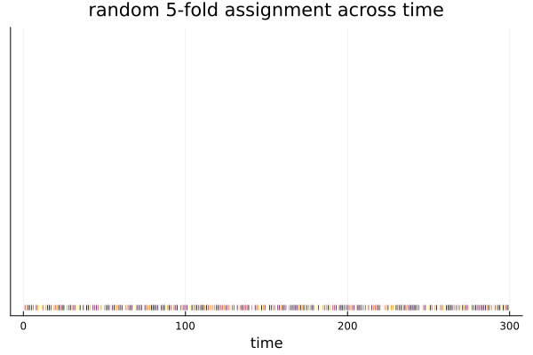
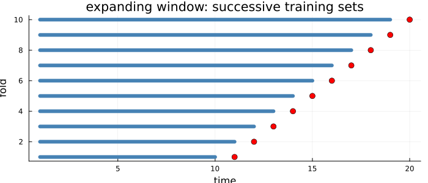
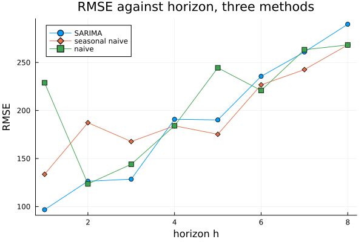
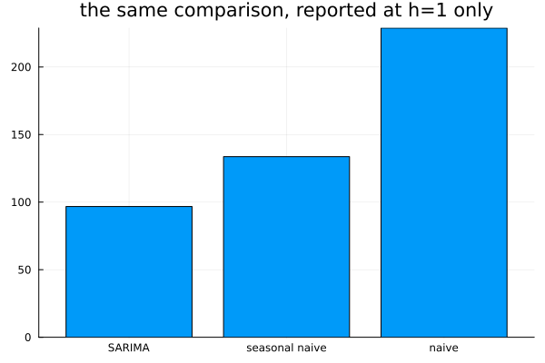
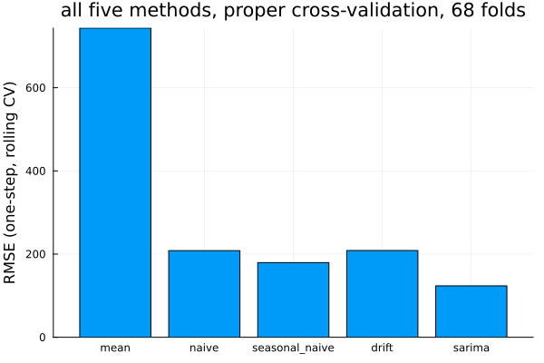
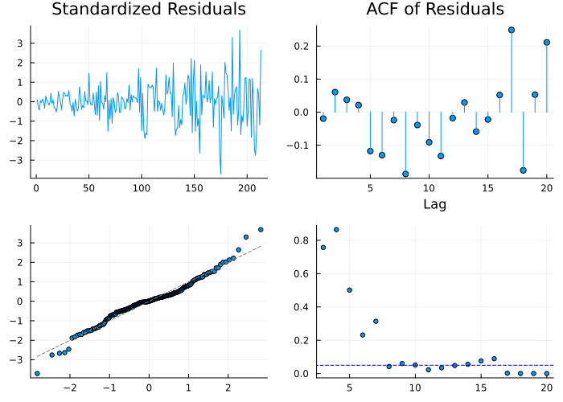

Evaluating Honestly
Chapter 22 measured a forecast against one held-out period. This chapter asks whether that measurement can be trusted, and mostly the answer is that one split is one draw.
One split is one draw
using TSAnalytics, Plots
d = dataset("aus_production")
y = Float64.(d.Cement)
n = length(y)
h = 8
origins = [n-8-32, n-8-24, n-8-16, n-8-8, n-8]
sarima_wins = 0
results = Tuple{Int,Float64,Float64}[]
for o in origins
train = y[1:o]
test = y[o+1:o+h]
m = fit_sarima(train, (0,1,1), (0,1,1,4))
f = forecast(m, train, h)
f_sn = seasonal_naive(train, h, 4)
r_m, r_sn = rmse(test, f.point), rmse(test, f_sn.point)
push!(results, (o, r_m, r_sn))
global sarima_wins += (r_m < r_sn)
end
labels = ["split $(i)" for i in 1:length(origins)]
bar(labels, [r[2] for r in results]; label="SARIMA", alpha=0.7, size=(700,350))
bar!(labels, [r[3] for r in results]; label="seasonal naive", alpha=0.7,
title="same two methods, five different splits of the same series")
for (o, r_m, r_sn) in results
println("origin=", o, " SARIMA=", round(r_m,digits=1), " seasonal naive=", round(r_sn,digits=1), " winner=", r_m < r_sn ? "SARIMA" : "seasonal naive")
end
println("SARIMA wins ", sarima_wins, " of ", length(origins), " splits")origin=178 SARIMA=363.3 seasonal naive=253.9 winner=seasonal naive
origin=186 SARIMA=105.9 seasonal naive=278.1 winner=SARIMA
origin=194 SARIMA=104.3 seasonal naive=140.9 winner=SARIMA
origin=202 SARIMA=141.7 seasonal naive=190.8 winner=SARIMA
origin=210 SARIMA=353.0 seasonal naive=244.7 winner=seasonal naive
SARIMA wins 3 of 5 splitsThe same two methods, fitted the same way, evaluated on five different eight-quarter windows of the identical Australian cement production series. The winner changes: SARIMA wins three of the five, seasonal naive wins the other two. Nothing about either method changed between splits — only where the eight-quarter window was drawn changed. Chapter 22 quietly treated one held-out period as though it were the whole truth about which method was better, and it is what almost everyone does. It is close to the most common evaluation error in applied forecasting, and it is entirely invisible if only one split is ever run.
sarima_fc(train, hmax) = forecast(fit_sarima(train, (0,1,1), (0,1,1,4)), train, hmax)
sn_fc(train, hmax) = seasonal_naive(train, hmax, 4)
e_sarima = tscv(y, sarima_fc; h=1, initial=100, step_length=2)
e_sn = tscv(y, sn_fc; h=1, initial=100, step_length=2)
diffs = abs.(e_sarima[:,1]) .- abs.(e_sn[:,1])
histogram(diffs; bins=15, legend=false, xlabel="|SARIMA error| − |seasonal naive error|",
title="distribution of the per-fold difference, $(length(diffs)) folds")
vline!([0.0]; color=:red, linewidth=2)
using Statistics
println("mean difference: ", round(mean(diffs), digits=2), " (negative = SARIMA better on average)")
println("SARIMA better on ", round(100*mean(diffs .< 0), digits=1), "% of folds")mean difference: -45.45 (negative = SARIMA better on average)
SARIMA better on 69.5% of foldsOne-step-ahead errors from the same two methods, this time across 59 rolling folds rather than five fixed splits. The distribution straddles zero — some folds clearly favour SARIMA, some clearly favour seasonal naive — even though the average leans toward SARIMA here (69.5% of folds). This is the more complete picture Chapter 22's single split could never show: not just which method wins on average, but how much the answer actually varies fold to fold, and whether a "win" is a robust pattern or a coin that came up a certain way five times running.
Splitting a series is not splitting a dataset
using Random
Random.seed!(3)
n2 = 300
ysim = zeros(n2)
for t in 2:n2
ysim[t] = 0.85*ysim[t-1] + 0.3*randn()
end
Random.seed!(11)
fold_id = shuffle(repeat(1:5, outer=ceil(Int, (n2-1)/5))[1:(n2-1)])
scatter(1:(n2-1), fill(1.0, n2-1); zcolor=fold_id, markersize=3, markershape=:vline,
legend=false, yticks=false, title="random 5-fold assignment across time", xlabel="time")
The ordinary machine-learning recipe shuffles observations into folds at random, shown above for a simulated persistent series — every vertical mark is one time point, coloured by which of five folds a random shuffle assigned it to, and neighbouring time points scatter across every fold with no regard for order. On a time series that means a model can be trained on observations from after the point it is asked to predict, using the future to predict the past. The resulting error estimate is optimistic — sometimes only mildly, sometimes wildly, depending on how much capacity the model actually has to exploit a temporally nearby point sitting in its training fold. A single global coefficient, checked directly on the series above (a one-parameter AR(1) fit by least squares), showed only a small difference between shuffled-fold and rolling-origin error here, because a one-parameter model has little room to "cheat" using a specific nearby point. A more flexible model — many lags, a tree, anything with the capacity to fit local structure — has far more room to do exactly that, and the more capacity a model has, the larger this optimism tends to be. This is a common and serious error, and it does not announce itself: the numbers just come out looking better than they should.
Rolling forward
folds = expanding_window_split(20; initial_window=10)
plot(; xlabel="time", ylabel="fold", title="expanding window: successive training sets", legend=false, size=(700,300))
for (i, (tr, te)) in enumerate(folds)
plot!([1, maximum(tr)], [i, i]; linewidth=6, color=:steelblue)
scatter!(te, fill(i, length(te)); color=:red, markersize=5)
end
plot!()
Fit on everything up to time t, forecast, move forward one step, repeat — the blue bars are each fold's training window, growing every time, and the red dots are the single point forecast each fold is scored against. Each forecast uses only information that existed when it was made, which is the only honest arrangement there is. The result is many forecast errors instead of one, and their distribution is exactly what the histogram earlier in this chapter needed.
mean_fc(train, hmax) = mean_forecast(train, hmax)
e_exp = tscv(y, mean_fc; h=1, initial=60, step_length=1)
e_roll = tscv(y, mean_fc; h=1, window=60, step_length=1)
println("mean_forecast, expanding window: RMSE=", round(sqrt(sum(abs2,e_exp)/length(e_exp)),digits=1))
println("mean_forecast, rolling window(60): RMSE=", round(sqrt(sum(abs2,e_roll)/length(e_roll)),digits=1))mean_forecast, expanding window: RMSE=579.6
mean_forecast, rolling window(60): RMSE=297.8The expanding window keeps all history; a fixed-size rolling window discards the oldest observations as it advances. On the mean-forecast benchmark applied to cement production — a series whose level has shifted substantially over its nearly sixty years — the difference is not subtle: the expanding window's RMSE, 579.6, is nearly double the rolling window's 297.8, because averaging in decades-old production levels actively hurts a forecast of the current level. Expanding uses more data; rolling adapts if the underlying process changes. Which is right depends on whether the past remains relevant to the present — an empirical question, and precisely the one this scheme can answer by trying both, exactly as done above.
sarima_fc(train, hmax) = forecast(fit_sarima(train, (0,1,1), (0,1,1,4)), train, hmax)
naive_fc(train, hmax) = naive(train, hmax)
sn_fc(train, hmax) = seasonal_naive(train, hmax, 4)
drift_fc(train, hmax) = drift(train, hmax)
errs = tscv(y, sarima_fc; h=1, initial=100) # one line per method
errs_sn = tscv(y, sn_fc; h=1, initial=100, window=60) # rolling window insteadtscv takes a plain function — (train, hmax) -> Forecast — as its second argument, and every method built across this Part already has that exact shape: naive, seasonal_naive, drift, mean_forecast directly, and any fitted model's own forecast wrapped in a one-line closure supplying its order. Comparing four different methods, or the same method under expanding versus rolling windows, is a loop over this one function, with no special-casing for which method is being scored.
The expanding-versus-rolling choice is not academic for Indian macroeconomic series. Structural breaks are frequent and datable — the 1991 liberalisation, the 2016 demonetisation, the 2017 GST transition — and an expanding window keeps training on data from a regime that may no longer apply, in exactly the way the cement example above kept averaging in decades-old production levels long after they stopped being informative. A rolling window handles this by forgetting, which is crude but honest. The alternative is to model the break explicitly, which is Chapter 41's territory and not built here. In the meantime, comparing both windows on the same series, the way the code above does, is cheap and tells you directly whether the older data is helping or hurting.
Horizons behave differently
naive_fc(train, hmax) = naive(train, hmax)
hs = 1:8
e_sarima_h = tscv(y, sarima_fc; h=hs, initial=140, step_length=4)
e_sn_h = tscv(y, sn_fc; h=hs, initial=140, step_length=4)
e_naive_h = tscv(y, naive_fc; h=hs, initial=140, step_length=4)
rmse_by_h(e) = [sqrt(sum(abs2, e[:,j])/size(e,1)) for j in 1:length(hs)]
r_s, r_sn, r_n = rmse_by_h(e_sarima_h), rmse_by_h(e_sn_h), rmse_by_h(e_naive_h)
plot(hs, r_s; marker=:circle, label="SARIMA")
plot!(hs, r_sn; marker=:diamond, label="seasonal naive")
plot!(hs, r_n; marker=:square, label="naive", xlabel="horizon h", ylabel="RMSE",
title="RMSE against horizon, three methods")
The lines are not parallel and they cross. SARIMA wins clearly at h = 1 (96.7 against seasonal naive's 133.6 and naive's 228.8), and by h = 6 through 8 seasonal naive has caught up and edged ahead. A method that wins at short horizons can lose at long ones, because short-horizon accuracy is mostly about capturing the immediate dynamics a fitted model is built to exploit, while long-horizon accuracy leans more on getting the broad trend and seasonal shape right — exactly what seasonal naive supplies directly, with nothing to estimate.
bar(["SARIMA","seasonal naive","naive"], [r_s[1], r_sn[1], r_n[1]]; legend=false,
title="the same comparison, reported at h=1 only")
A clean, confident, and incomplete answer — this is what the great majority of published forecast comparisons actually report. "Which method is better" is therefore not a well-posed question without a horizon attached to it, and the single-horizon chart above would have been the entire story had the horizon-by-horizon version never been run.
The comparison that matters
drift_fc(train, hmax) = drift(train, hmax)
cv_methods = [("mean", mean_fc), ("naive", naive_fc), ("seasonal_naive", sn_fc), ("drift", drift_fc), ("sarima", sarima_fc)]
rmses = Float64[]
for (nm, fc) in cv_methods
e = tscv(y, fc; h=1, initial=150, step_length=1)
push!(rmses, sqrt(sum(abs2,e)/length(e)))
end
bar([m[1] for m in cv_methods], rmses; legend=false, ylabel="RMSE (one-step, rolling CV)",
title="all five methods, proper cross-validation, $(size(tscv(y, mean_fc; h=1, initial=150, step_length=1),1)) folds")
for ((nm,_), r) in zip(cv_methods, rmses)
println(nm, ": RMSE=", round(r, digits=2))
endmean: RMSE=743.55
naive: RMSE=208.21
seasonal_naive: RMSE=179.43
drift: RMSE=208.5
sarima: RMSE=123.54The four benchmarks from Chapter 22 plus the fitted SARIMA(0,1,1)(0,1,1)[4], compared under genuine rolling-origin cross-validation on real Australian cement production — a series not selected for a favourable outcome; it is the same series used throughout this Part, chosen originally in Chapter 22 because it happened to be a case where the fitted model lost a single-split comparison. Under proper CV, at one-step-ahead, the fitted model wins comfortably here — 123.5 against seasonal naive's 179.4 and the next-best benchmark's 208.2. Say so plainly: the point of this chapter is the method of comparison, not a predetermined outcome, and this time the more complex model earns its complexity. The horizon-crossing chart two sections back is the honest complement — the same model that wins decisively at h = 1 above is not the horizon-8 winner, and both results are correct simultaneously; they are answers to different questions.
m_final = fit_sarima(y, (0,1,1), (0,1,1,4))
function sarima_resid(m::SarimaModel, y, s)
p,d,q = m.order; P,D,Q,sper = m.seasonal_order
yv = Float64.(collect(y))
yD = D > 0 ? diff(yv, sper; differences=D) : yv
yd = d > 0 ? diff(yD, 1; differences=d) : yD
mu = m.mean === nothing ? 0.0 : m.mean
w = yd .- mu
ar, ma = TSAnalytics.combined_ar_ma(; phi=m.phi, theta=m.theta,
seasonal_phi=m.Phi, seasonal_theta=m.Theta, s=sper)
ssm = TSAnalytics.build_statespace(ar, ma)
_, sigma2, v, _, converged = TSAnalytics.kalman_filter(ssm, w)
return v
end
r_final = sarima_resid(m_final, y, 4)
dp_final = diagnostic_plot(r_final, m_final)
println("minimum Ljung-Box p-value: ", minimum(dp_final.ljungbox_pvalues))
plot(dp_final; size=(700,500))
Chapter 12's panel, run on the model that just won the cross-validation comparison above — and it fails outright, decisively (p = 2.1×10⁻⁵ at the shortest tested lag, and it stays low across many lags, not just one). Cross-validation says which method forecasts better on this series; the diagnostic panel says whether the winner is a correctly specified model of how the series behaves. They disagree here, and both are right about what they each measure: a misspecified model can still forecast adequately, because forecasting only requires the point predictions to track reality well, while the diagnostic panel is checking something stricter — whether the residuals are the structureless noise a correctly specified model would leave behind. Knowing which of these two questions was actually asked, on any given result, is the whole discipline this chapter has been building toward.
Where this leaves you
Part IV is finished. You can identify a candidate model, fit it, choose its order automatically while knowing how often that automation is actually right, forecast with honestly widening intervals, and evaluate the result in a way that does not flatter it.
Every model built across this Part has assumed constant variance. Chapter 11 showed a real series where that assumption was plainly false, and nothing built since has addressed it.
Part V does.